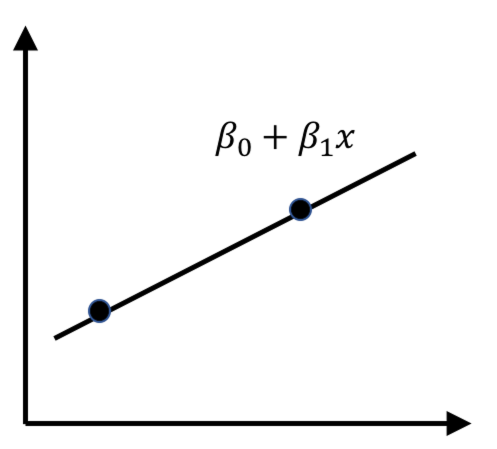
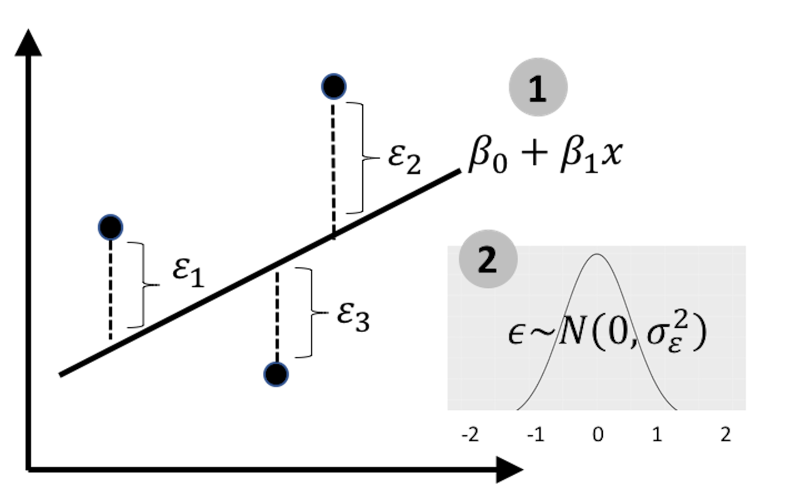
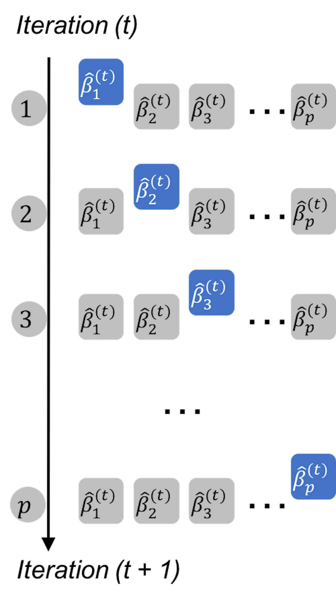
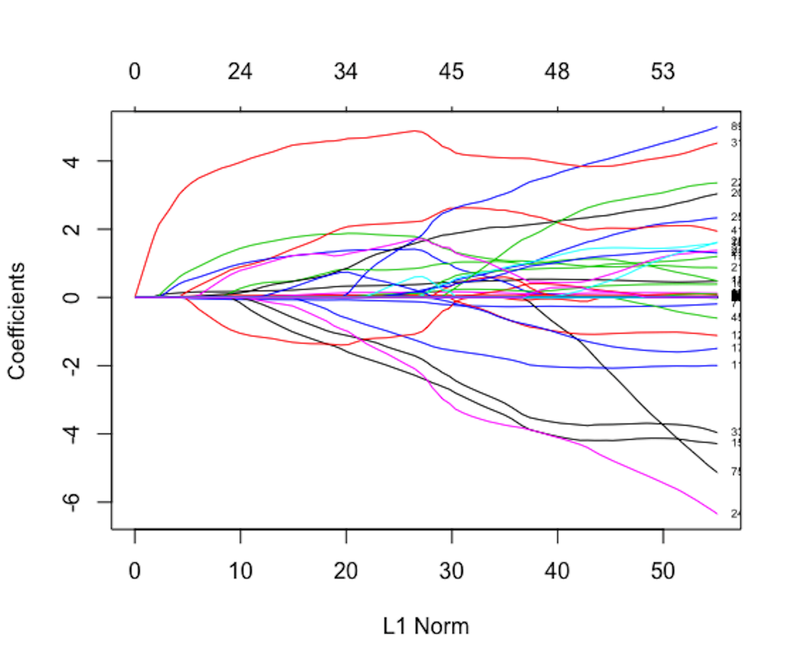
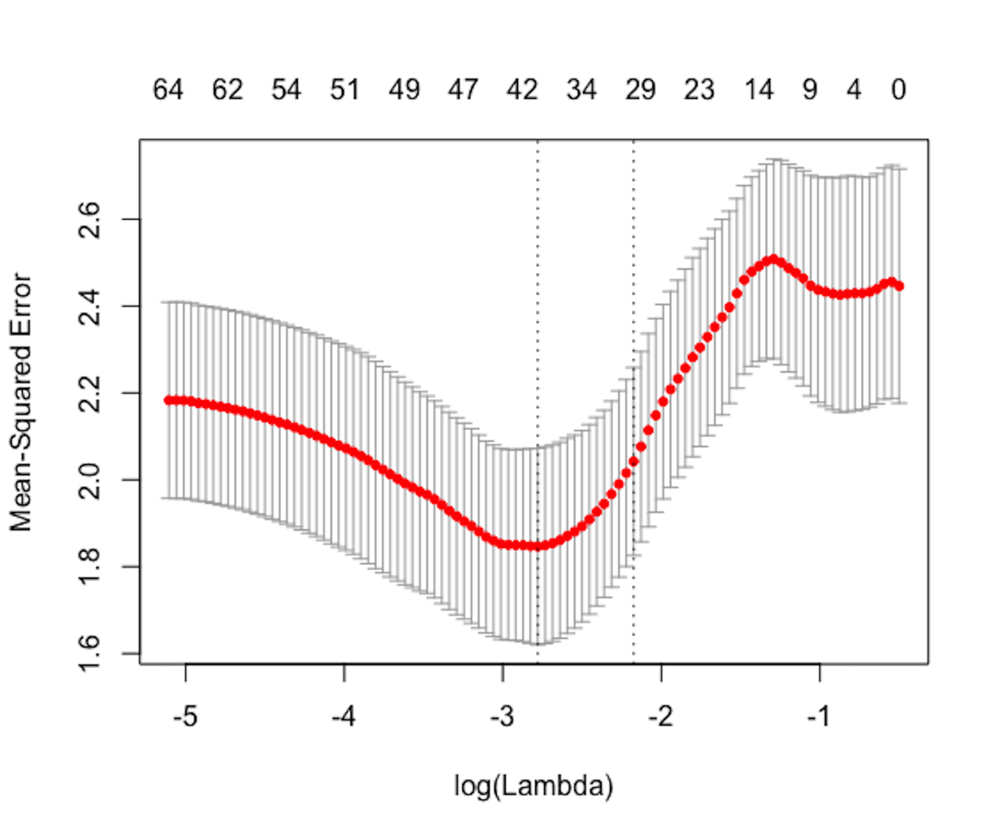

LASSO
Rationale and formulation
 Figure 140: A line is not a model
Two points determine a line, as shown in Figure 140. It shares the same geometric form as a linear regression model, but it is a deterministic geometric pattern and has nothing to do with error.
 Figure 141: Revisit the linear regression model
With one more data point, magic happens: as shown in Figure 141, now we can estimate the residuals and study the systematic patterns of error. The line in Figure 141 becomes a statistical model.
The two lines in Figures 140 and 141, one is a deterministic pattern, while another is a statistical model, are like homonym. The different meanings share the same form of their signifier (e.g., like the word bass that means a certain sound that is low and deep, or a type of fish).
The error is a defining component of a statistical model. It models the noise in the data. In an application context, understanding the noise and knowing how much proportion the noise contributes to the total variation of the dataset is important knowledge. And, to derive the p-values of the regression coefficients, we need the noise so that we can compare the strength of the estimated coefficients with the noise to evaluate if the estimated coefficients are significantly different from random manifestation (i.e., if we cannot model the noise, then we have no basis to define what is random manifestation.).
To model a linear regression model, we need enough data points to estimate the error. For the simple example when there is only one predictor \(x\), as shown in Figures 140 and 141, we would need at least \(3\) data points to estimate the error199 While this is obvious from Figures 140 and 141, we can also obtain the conclusion by derivation. I.e., given two data points, \((x_1, y_1)\) and \((x_2, y_2)\) we could write two equations, \(y_1 = \beta_{0}+\beta_{1} x_1\) and \(y_2 = \beta_{0}+\beta_{1} x_2\).. This is just enough to solve for the \(2\) regression coefficients. Consider a problem with \(10\) variables, what is the minimum number of data points needed to enable the estimation of error200 The answer is \(12\). Suppose that we only have \(11\) data points. The regression line is defined by \(11\) regression coefficients. For each data point, we can write up an equation. Thus, \(11\) data points are just enough to estimate the \(11\) regression coefficients, leaving no room for estimating errors.?
From the examples aforementioned, we could deduce that the number of data points, i.e., denoted as \(N\), needs to be larger than the number of variables, i.e., denoted as \(p\). This is barely a minimum requirement of linear regression, as we haven’t asked how many data points are needed to ensure high-quality estimation of the parameters. In classic settings in statistics, \(N\) is assumed to be much larger than \(p\) in order to prove asymptotics—a common approach to prove a statistical model is valid. Practically, linear regression model finds difficulty in applications where the ratio \(N/p\) is small. In recent years, there are applications where the number of data points is even smaller than the number of variables, i.e., commonly referred to as \(N < p\) problems .
When increasing \(N\) is not always a feasible option, reducing \(p\) is a necessity. Some variables may be irrelevant or simply noise. Even if all variables are statistically informative, when considered as a whole, some of them may be redundant, and some are weaker than others. In those scenarios, there is room for us to wriggle with the problematic dataset and improve on the ratio \(N/p\) by reducing \(p\).
LASSO was invented in 1996 to sparsify the linear regression model and allow the regression model to select significant predictors automatically201 Tibshirani, R. Regression shrinkage and selection via the Lasso, Journal of the Royal Statistical Society (Series B), Volume 58, Issue 1, Pages 267-288, 1996..
Remember that, to estimate \(\boldsymbol{\beta}\), the least squares estimation of linear regression is
\[\begin{equation} \boldsymbol{\hat \beta} = \arg\min_{\boldsymbol \beta} { (\boldsymbol{y}-\boldsymbol{X} \boldsymbol{\beta})^{T}(\boldsymbol{y}-\boldsymbol{X} \boldsymbol{\beta}), } \tag{83} \end{equation}\]
where \(\boldsymbol{y} \in \mathbb{R}^{N \times 1}\) is the measurement vector of the outcome variable, \(\boldsymbol{X} \in \mathbb{R}^{N \times p}\) is the data matrix of the \(N\) measurement vectors of the \(p\) predictors, \(\boldsymbol \beta \in \mathbb{R}^{p \times 1}\) is the regression coefficient vector202 Here, we assume that the data is normalized/standardized and no intercept coefficient \(\beta_0\) is needed. Normalization means \(\sum_{n=1}^N x_{nj}/N=0\), \(\sum_{n=1}^N x_{ij}^2/N=1\) for \(j=1,2,\dots,p\) and \(\sum_{n=1}^N y_n/N=0\). Normalization is a common practice, and some R packages automatically normalize the data as a default preprocessing step before the application of a model..
The formulation of LASSO is
\[\begin{equation} \boldsymbol{\hat \beta} = \arg\min_{\boldsymbol \beta} \left \{ \underbrace{(\boldsymbol{y}-\boldsymbol{X} \boldsymbol{\beta})^{T}(\boldsymbol{y}-\boldsymbol{X} \boldsymbol{\beta})}_{\text{Least squares}} + \underbrace{\lambda \lVert \boldsymbol{\beta}\rVert_{1}}_{L_1 \text{ norm penalty}} \right \} \tag{84} \end{equation}\]
where \(\lVert \boldsymbol{\beta} \rVert_1 = \sum_{i=1}^p \lvert \beta_i \rvert\). The parameter, \(\lambda\), is called the penalty parameter that is specified by user of LASSO. The larger the parameter \(\lambda\), the more zeros in \(\boldsymbol{\hat \beta}\).
It could be seen that LASSO embodies two components in its formulation. The \(1\)^{st} term is the least squares loss function inherited from linear regression that is used to measure the goodness-of-fit of the model. The \(2\) term is the sum of absolute values of elements in \(\boldsymbol{\beta}\) that is called the \(L_1\) norm penatly . It measures the model complexity , i.e., smaller \(\lVert \boldsymbol{\beta} \rVert_1\) tends to create more zeros in \(\boldsymbol{\beta}\), leading to a simpler model. In practice, by tuning the parameter \(\lambda\), we hope to find the best model with an optimal balance between model fit and model complexity.
Figure 142: Path solution trajectory of the coefficients; each curve corresponds to a regression coefficient

As shown in Figure 142, LASSO can generate a path solution trajectory that visualizes the solutions of \(\boldsymbol{\beta}\) for a continuum of values of \(\lambda\). Model selection criteria such as the Akaike Information Criteria (AIC) or cross-validation can be used to identify the best \(\lambda\) that would help us find the final model, i.e., as the vertical line shown in Figure 142. When many variables are deleted from the model, the dimensionality of the model is reduced, and \(N/p\) is increased.
The shooting algorithm
We introduce the shooting algorithm to solve for the optimization problem shown in Eq. (84). Let’s consider a simple example when there is only one predictor \(x\). The objective function in Eq. (84) could be rewritten as
\[\begin{equation} l\left(\beta\right)=(\boldsymbol{y} - \boldsymbol{X}\beta)^{T}(\boldsymbol{y} - \boldsymbol{X}\beta) + \lambda \lvert \beta \rvert. \tag{85} \end{equation}\]
To solve Eq. (85), we take the differential of \(l\left(\beta\right)\) and put it equal to zero
\[\begin{equation} \frac {\partial l(\beta)}{\partial \beta}=0. \tag{86} \end{equation}\]
A complication of this differential operation is that the \(L_1\)-norm term, \(\lvert \beta \rvert\), has no gradient when \(\beta=0\). There are three scenarios:
If \(\beta>0\), then \(\frac {\partial L(\beta)}{\partial \beta}=2\beta-2\boldsymbol{X}^T\boldsymbol{y}+\lambda\). Based on Eq. (86), we can estimate \(\beta\) as \(\hat \beta =\boldsymbol{X}^T\boldsymbol{y}-\lambda/2\). Note that this estimate of \(\beta\) may turn out to be negative. If that happens, it would be a contradiction since we have assumed \(\beta>0\) to derive the result. This contradiction points to the only possibility that \(\beta=0\).
If \(\beta<0\), then \(\frac {\partial L(\beta)}{\partial \beta}=2\beta-2\boldsymbol{X}^T\boldsymbol{y}-\lambda\). Based on Eq. (86), we have \(\beta = \boldsymbol{X}^T\boldsymbol{y}+\lambda/2\). Note that this estimate of \(\beta\) may turn out to be positive. If that happens, it would be a contradiction since we have assumed \(\beta<0\) to derive the result. This contradiction points to the only possibility that \(\beta=0\).
If \(\beta=0\), then we have had the solution and no longer need to derive the gradient.
In summary, the solution of \(\beta\) is
\[\begin{equation} \hat \beta = \begin{cases} \boldsymbol{X}^T\boldsymbol{y}-\lambda/2, &if \, \boldsymbol{X}^T\boldsymbol{y}-\lambda/2>0 \\ \boldsymbol{X}^T\boldsymbol{y}+\lambda/2, &if \, \boldsymbol{X}^T\boldsymbol{y}+\lambda/2<0 \\ 0, & if \, \lambda/2 \geq \lvert\boldsymbol{X}^T\boldsymbol{y}\rvert. \end{cases}\tag{87} \end{equation}\]
Now let’s consider the general case as shown in Eq. (84). Figure 143 illustrates the basic idea: to apply the conclusion (with a slight variation) we have obtained in Eq. (87) to solve Eq. (84). Each iteration solves for one regression coefficient, assuming that all the other coefficients are fixed (i.e., to their latest values).
 Figure 143: The shooting algorithm iterates through the coefficients
In each iteration, we solve a similar problem with the one-predictor special problem shown in Eq. (85). For instance, denote \(\beta_j^{(t)}\) as the estimate of \(\beta_j\) in the \(t^{th}\) iteration. If we fix the other regression coefficients as their latest estimates, we can rewrite Eq. (84) as a function of \(\beta_j^{(t)}\) only
\[\begin{equation} l(\beta_j^{(t)}) = \left (\boldsymbol{y}^{(t)}_j - \boldsymbol{X}_{(:,j)}\beta_j^{(t)} \right )^{T} \left (\boldsymbol{y}^{(t)}_j - \boldsymbol{X}_{(:,j)}\beta_j^{(t)}\right ) + \lambda \lvert \beta_j^{(t)} \rvert, \tag{88} \end{equation}\]
where \(\boldsymbol{X}_{(:,j)}\) is the \(j^{th}\) column of the matrix \(\boldsymbol{X}\), and
\[\begin{equation} \boldsymbol{y}^{(t)}_j = \boldsymbol{y-} \sum\nolimits_{k\neq j}\boldsymbol{X}_{(:,k)}\hat\beta^{(t)}_{k}. \tag{89} \end{equation}\]
Eq. (88) has the same structure as Eq. (85). We can readily apply the conclusion in Eq. (87) here and obtain
\[\begin{equation} \hat\beta_j^{(t)}=\begin{cases} q^{(t)}_j - \lambda / 2, & if \, q^{(t)}_j - \lambda/2 >0 \\ q^{(t)}_j + \lambda / 2, & if \, q^{(t)}_j + \lambda/2 <0 \\ 0, & if \, \lambda/2 \geq \lvert q^{(t)}_j \rvert, \end{cases} \tag{90} \end{equation}\]
where
\[\begin{equation} q^{(t)}_j=\boldsymbol{X}_{(:, j)}^T \boldsymbol{y}^{(t)}_j. \tag{91} \end{equation}\]
A small data example
Table 34: A dataset example for LASSO
| \(x_1\) | \(x_2\) | \(y\) |
|---|---|---|
| \(-0.707\) | \(0\) | \(-0.77\) |
| \(0\) | \(0.707\) | \(0.15\) |
| \(0.707\) | \(-0.707\) | \(0.62\) |
Consider a dataset example as shown in Table 34.203 To generate this dataset, we sampled the values of \(y\) using the model \[ y =0.8x_1+\varepsilon, \text{ where } \varepsilon \sim N(0,0.5). \] Only \(x_1\) is important.
In matrix form, the dataset is rewritten as
\[ \boldsymbol{y}=\left[ \begin{array}{c}{-0.77} \\ {0.15} \\ {0.62}\end{array}\right], \text { } \boldsymbol{X}=\left[ \begin{array}{ccccc} {-0.707} & {0} \\ {0} & {0.707} \\ {0.707} & {-0.707}\end{array}\right]. \]
Now let’s implement the Shooting algorithm on this data. The objective function of LASSO on this case is
\[ \sum\nolimits_{n=1}\nolimits^3 [y_n-(\beta_1x_{n,1}+\beta_2x_{n,2})]^2+\lambda(\lvert \beta_1 \rvert+\lvert \beta_2 \rvert). \]
Suppose that \(\lambda=1\), and we initiate the regression coefficients as \(\hat \beta_1^{(0)}=0\) and \(\hat \beta_2^{(0)}=1\).
To update \(\hat \beta_1^{(1)}\), based on Eq. (90), we first calculate \(\boldsymbol{y}^{(1)}_1\) using Eq. (89)
\[ \boldsymbol{y}^{(1)}_1 = \boldsymbol{y-}\boldsymbol{X}_{(:,2)}\hat\beta_2^{(0)} = \begin{bmatrix} -0.7700 \\ -0.557 \\ 1.3270 \\ \end{bmatrix} .\]
Then we calculate \(q^{(1)}_1\) using Eq. (91)
\[ q^{(1)}_1=\boldsymbol{X}_{(:,1)}^T\boldsymbol{y}^{(1)}_1 = 1.7654. \] As \[ q^{(1)}_1 - \lambda/2 >0, \] based on Eq. (90) we know that
\[\hat\beta_1^{(1)} = q^{(1)}_1 - \lambda/2 = 1.2654. \]
Then we update \(\hat \beta_2^{(1)}\). We can obtain that \[ \boldsymbol{y}^{(1)}_2 = \boldsymbol{y-}\boldsymbol{X}_{(:,1)}\hat\beta_1^{(1)} = \begin{bmatrix} 0.1876 \\ 0.1500 \\ -0.2746\\ \end{bmatrix} .\] And we can get \[ q^{(1)}_2=\boldsymbol{X}_{(:,2)}^T\boldsymbol{y}^{(1)}_2 = 0.3002. \] As \[\lambda / 2 \geq \lvert q^{(1)}_2\rvert , \] we know that \[\hat \beta_2^{(1)} = 0.\]
Thus, with only one iteration, the Shooting algorithm identified the irrelevant variable.
R Lab
The 7-Step R Pipeline. Step 1 and Step 2 get dataset into R and organize the dataset in required format.
# Step 1 -> Read data into R workstation
#### Read data from a CSV file
#### Example: Alzheimer's Disease
# RCurl is the R package to read csv file using a link
library(RCurl)
url <- paste0("https://raw.githubusercontent.com",
"/analyticsbook/book/main/data/AD_hd.csv")
AD <- read.csv(text=getURL(url))
str(AD)# Step 2 -> Data preprocessing
# Create your X matrix (predictors) and Y
# vector (outcome variable)
X <- AD[,-c(1:4)]
Y <- AD$MMSCORE
# Then, we integrate everything into a data frame
data <- data.frame(Y,X)
names(data)[1] = c("MMSCORE")
# Create a training data
train.ix <- sample(nrow(data),floor( nrow(data)) * 4 / 5 )
data.train <- data[train.ix,]
# Create a testing data
data.test <- data[-train.ix,]
# as.matrix is used here, because the package
# glmnet requires this data format.
trainX <- as.matrix(data.train[,-1])
testX <- as.matrix(data.test[,-1])
trainY <- as.matrix(data.train[,1])
testY <- as.matrix(data.test[,1])Figure 144: Path trajectory of the fitted regression parameters. The figure should be read from right to left (i.e., \(\lambda\) from small to large). Variables that become zero later are stronger (i.e., since a larger \(\lambda\) is needed to make them become \(0\)). The variables that quickly become zero are weak or insignificant variables.
Step 3 uses the R package glmnet204 Check out the argument glmnet to learn more. to build a LASSO model.
# Step 3 -> Use glmnet to conduct LASSO
# install.packages("glmnet")
require(glmnet)
fit = glmnet(trainX,trainY, family=c("gaussian"))
head(fit$beta)
# The fitted sparse regression parameters under
# different lambda values are stored in fit$beta.Step 4 draws the path trajectory of the LASSO models (i.e., as the one shown in Figure 142). The result is shown in Figure 144. It displays the information stored in fit$beta. Each curve shows how the estimated regression coefficient of a variable changes according to the value of \(\lambda\).
# Step 4 -> visualization of the path trajectory of
# the fitted sparse regression parameters
plot(fit,label = TRUE) Figure 145: Cross-validation result. It is hoped (because it is not always the case in practice) that it is U-shaped, like the one shown here, so that we can spot the optimal value of \(\lambda\), i.e., the one that corresponds to the lowest dip point.
Step 5 uses cross-validation to identify the best \(\lambda\) value for the LASSO model. The result is shown in Figure 145.
# Step 5 -> Use cross-validation to decide which lambda to use
cv.fit = cv.glmnet(trainX,trainY)
plot(cv.fit)
# look for the u-shape, and identify the lowest
# point that corresponds to the best modelStep 6 views the best model and evaluates its predictions.
# Step 6 -> To view the best model and the
# corresponding coefficients
cv.fit$lambda.min
# cv.fit$lambda.min is the best lambda value that results
# in the best model with smallest mean squared error (MSE)
coef(cv.fit, s = "lambda.min")
# This extracts the fitted regression parameters of
# the linear regression model using the given lambda value.
y_hat <- predict(cv.fit, newx = testX, s = "lambda.min")
# This is to predict using the best model
cor(y_hat, data.test$MMSCORE)
mse <- mean((y_hat - data.test$MMSCORE)^2)
# The mean squared error (mse)
mseResults are shown below.
## 0.2969686 # cor(y_hat, data.test$MMSCORE)
## 2.453638 # mseStep 7 re-fits the regression model using the variables selected by LASSO. As LASSO put \(L_1\) norm on the regression parameters, it not only penalizes the regression coefficients of the irrelevant variables to be zero, but also penalizes the regression coefficients of the selected variable. Thus, the estimated regression coefficients of a LASSO model tend to be smaller than they are (i.e., this is called bias in machine learning terminology).
# Step 7 -> Re-fit the regression model with selected variables
# by LASSO
var_idx <- which(coef(cv.fit, s = "lambda.min") != 0)
lm.AD.reduced <- lm(MMSCORE ~ ., data =
data.train[,var_idx,drop=FALSE])
summary(lm.AD.reduced)